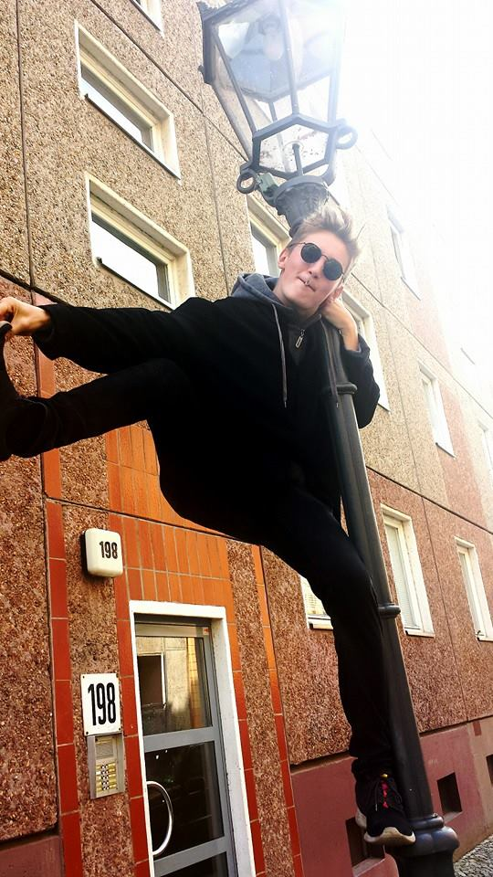

Brugerinterviews
what - HVAD sker der? - hvad sker der præcist, uden at komme med antagelser
Manden fortæller om sine problemer mht. hans klædeskab - han har nemlig ikke mere plads. Han siger, at han har en del problemer med at han ikke kan finde noget hurtigt at tage på, grundet at hans søn kommer til at smide noget af det beskidte tøj ind på samme plads, som det rene. Derudover fortæller han også, at han har en masse tøj der potentielt kan genbruges, men at han ikke ved om det er godt nok til at give videre eller sælge, og derfor bare ligger og fylder indtil han smider det ud på et senere tidspunkt. Han har også en del tøj som sagtens kan bruges af hans børn, men ikke på nuværende tidspunkt. Det tøj ligger derfor også bare og fylder.
how - HVORDAN gør brugeren? - er det svært, at brugeren glad eller vred
Manden er frustereret over mangelende struktur af hans klædeskab. Han af struktur og viden om hvor han kan smide det gamle tøj hen, som kan genbruges, samt manglende viden omkring hvordan han kan få struktureret sit klædeskab.
Han synes det er svært at vide præcist hvad han kan give videre med god samvittighed, og hvad han bare kan smide ud.
why - HVORFOR gør brugeren det? - motivationer og oplevelser
Mandens motivationer er at videregive tøjet idet han ikke bare gider at smide det ud, og kan glæde andre med det, og hans oplevelse er at det ikke er optimalt på nuværende tidspunkt.
Brugerinterview #1 - Laurits Faber
what - HVAD sker der?
Laurits fortæller, at han pga. pladsmangel bruger et tøjstativ og fire bedrollers til at opbevare alt sit tøj. Han Fortæller at han har alt for meget tøj, og en af hans problemer er, at det kommer til at ligge og flyde, og dermed rode - det gør hans kæreste lettere frustreret. Han fortæller også at han gemmer på alt det overflødige tøj, da han ikke ved om han skal bruge det igen på et senere tidspunkt, og han kan ikke nænne at smide det ud. Laurits fortæller at han er for doven til at sælge det ubenyttede tøj videre.
how - HVORDAN gør brugeren?
Laurits føler sig frusteret over at hans tøj ligger og fylder, og det påvirker hans daglige humør - og ikke mindst hans kærestes.
why - HVORFOR gør brugeren det?
Han vil gerne have mere nyt tøj, og det kan han kun opnå ved at skaffe sig af med det gamle.
Spørgsmål brugt til interview
- Hvordan opbevarer du dit tøj?
- Hvad gør du med det tøj der ikke bruges?
- Hvorfor smider du ikke det tøj ud, som du ikke bruger?
- Hvordan påvirker det din dagligdag, at tøjet ligger og flyder?